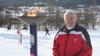

| Far | Olaf Helgerud |
| Mor | Synnøve Tofsrud |
| Sist redigert | 26 september 2007 00:00:00 |
| Far | Anton Brusveen (f. 18 mars 1897, d. 20 mai 1966) |
| Mor | Kristine Barhaugen (f. 6 mars 1901, d. 4 mars 1949) |
| Sønn | Tormod Brusveen+ |
| Datter | Turid Brusveen+ |
| Sønn | Bjørn Brusveen+ |

Brusveen har fire norske mesterskap, på 15 km i 1957 og 1958, på 30 km i 1958 og på 3 x 10 km stafett med Vingrom i 1957.
Brusveen tok gull på 15 km under OL 1960 i Squaw Valley. Han var opprinnelig tatt ut som hjemmeværende reserve, men få dager før OL ble han tatt ut etter gode resultater i testrenn i Norge. Kong Olav blir tillagt æren for at Brusveen ble tatt ut til OL. Aftenpostens journalist Sverre Fodstad henvendte seg til slottet etter at hele Norge mente Håkon Brusveen var forbigått i OL-uttaket og fikk følgende svar gjennom Kong Olavs kabinettsekretær: «Jeg ser gjerne at Brusveen blir med til Squaw Valley» Det var svært uventet at Brusveen skulle gå helt til topps, foran medaljegrossistene Sixten Jernberg og Veikko Hakulinen.
Under OL 1960 gikk Brusveen også ankeretappen for det norske stafettlaget. Norge ledet store deler av konkurransen ved Harald Grønningen, Hallgeir Brenden (10.2.1929-21.9.2007), og Einar Østby. Etter en knallhard spurt måtte Brusveen se seg slått av Finlands Hakulinen med 0,8 sekunders margin.
I 1958 ble Brusveen tildelt Holmenkollmedaljen, og i 1960 ble han tildelt Morgenbladets gullmedalje. Brusveen drev sportsforretning på Lillehammer. Etter aktiv karriere ble han en del av NRK Radiosportens kommentatorteam; i mange år samarbeidet han med Bjørge Lillelien som kommenterte fra langrennsstadion mens Brusveen kommenterte ute fra løypa.
| Sist redigert | 23 april 2021 00:00:00 |
{kind=link}